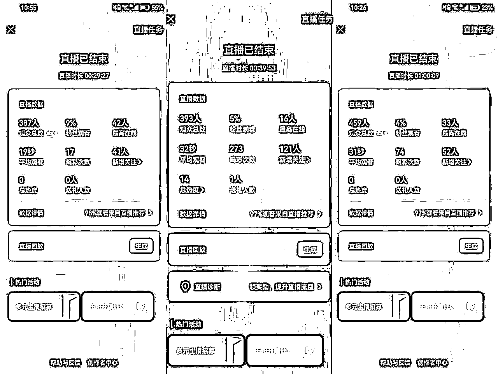
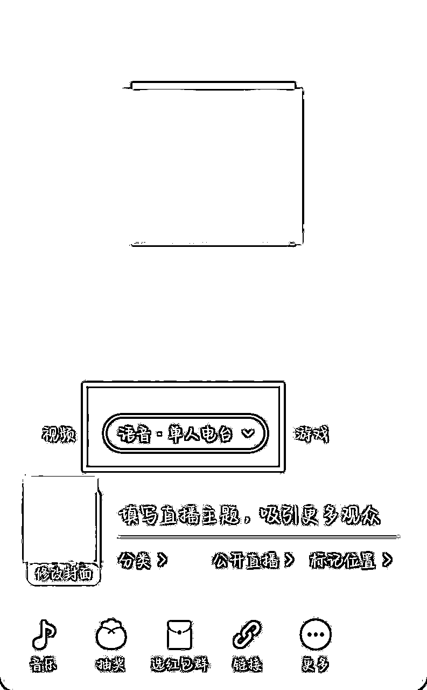
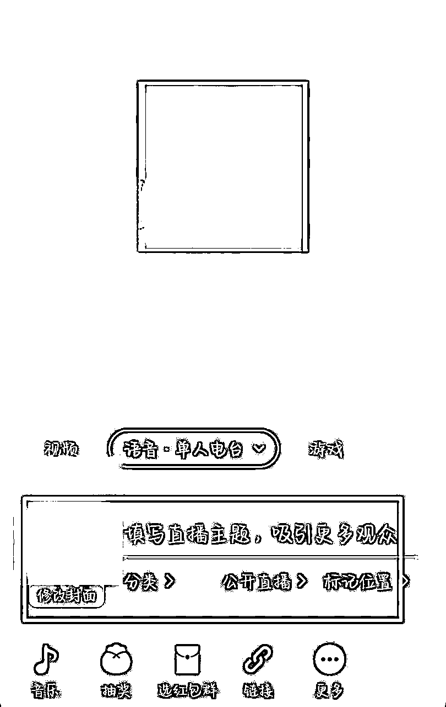
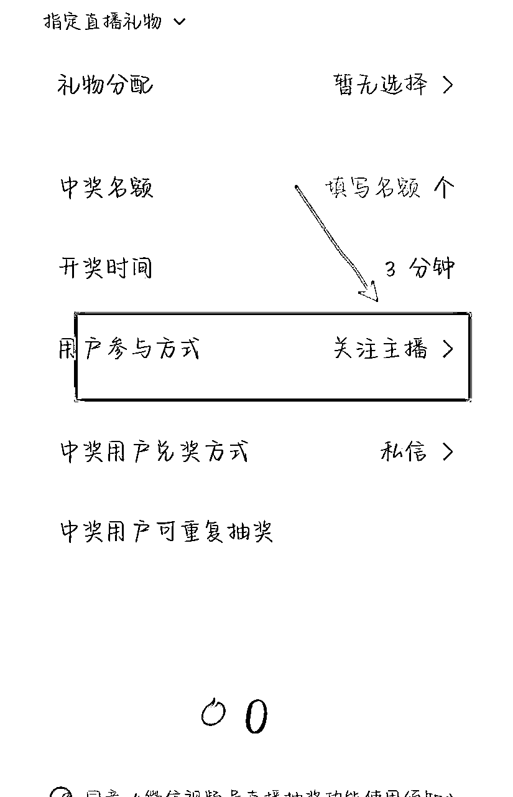
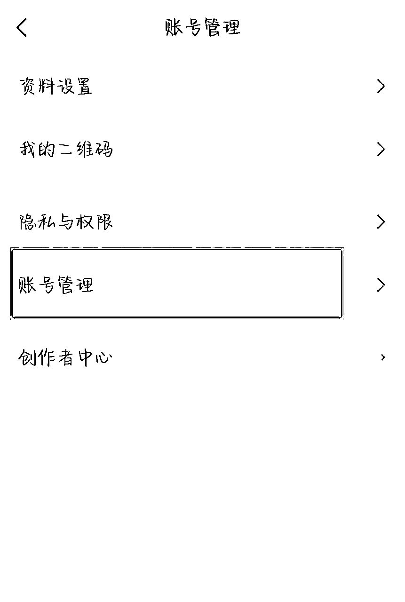
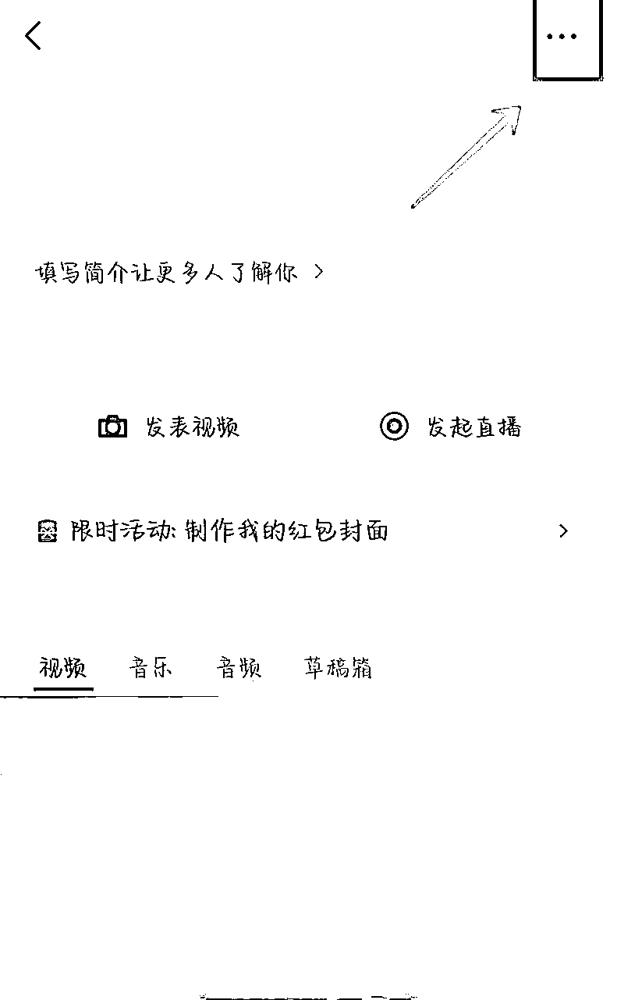
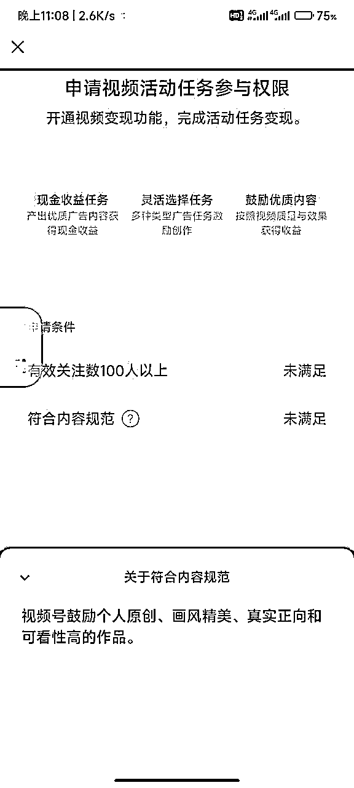
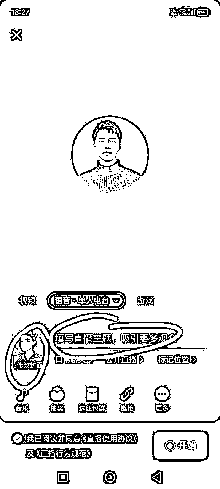
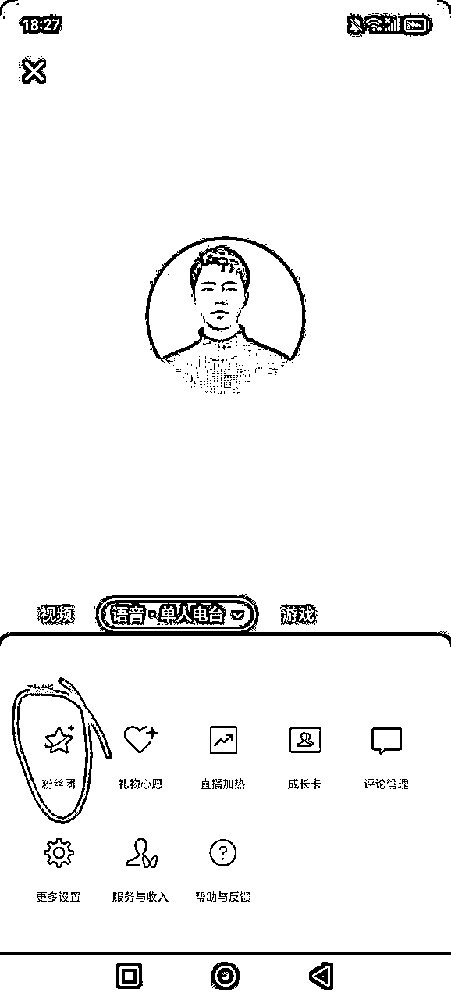
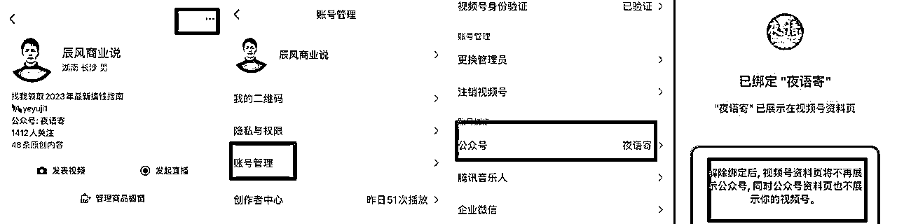

来源：https://k874t2qh8w.feishu.cn/docx/OjmfdzO4HoJPnJxJypOcKtKenPg
大家好，我是辰风。最近这段时间，很多朋友都在尝试做语音视频号直播，数据也非常可观。
我的一位朋友通过单日的直播，一天涨了1000多粉，我做了三场直播，每场涨粉也有100左右。

视频号最近热度很高，很多人都入场在玩，并且拿到了数据反馈，场观可以多的达到2-3K，少的也有几百。
没有基础粉丝没关系，我们走的是平台推荐流量的模式。
玩法很暴力：语音电台开播，然后挂福袋，适当互动聊天，留人在直播间，做涨粉就好了。目标是两个：私域导流、视频号涨粉。
后端变现就是，通过私域成交，通过直播进行带货。
视频号需要在微信App上开通。打开微信app，在“发现”页面，点击“视频号”，然后点击视频号页面右上方的“人头”图标，就进入到了开通视频号的页面。演示截图如下：


在创建视频号的界面，根据页面操作提示，选择好头像、性别，输入名字及地区，根据个人意愿和需求选择是否在个人名片上展示视频号，点击勾选“我已阅读并同意《微信视频号运营规范》和《隐私声明》”后，点击创建。
（小技巧:选择打开“在个人名片上展示视频号”按钮，在别人加好友后，或即使不加好友在某个群里点击我们的头像时，自己发表的视频就能得到更多曝光的机会，从而增加视频播放、点赞、转发及评论的可能性。）

进入直播页面，选择语音电台，然后开启直播。

语音电台的直播没有办法贴图。如果你需要贴图，只能使用视频直播。

在开播的页面进行封面和标题的设置。
今天是初五，很多人在迎财神，可以直接使用财神的封面。
因为视频号的主要受众用户是中老年，所以要迎合一下他们的口味，不要用年轻人的审美。

进入音乐搜索可以搜索一些过年的喜庆的音乐，比如好运来，财神来到我家门等等，然后添加到你的歌单。

点击音乐就可以直接播放，然后进入上方可以调整音量大小。

进入挂福袋的页面，可以选择发放爱心，一次可以设置3到4个爱心，然后开奖时间设五/六分钟。
不同的设置时长，可能用户的留存和关注转化效果会不一样，需要去进行测试。

然后要设置成关注主播之后可以抽奖领福袋。
可以用小号评论，让大家抽奖领取福袋，然后设置上墙。
可以适当的做一些评论的福袋，让大家在评论区进行互动，增加直播间的流量。
并且进行抽奖福袋的引导。
在直播间说话，引导大家可以左上角领取福袋，有小惊喜。（家人们，可以加个粉丝团，给直播间点点赞）
话术参考：
家人们，把直播间赞点上来，5000给大家送一波福利。
视频号刚开播的时候，流量是不错的，会有推荐流量进来。
等播了一段时间，你会发现不怎么进人了，然后停留的也很短暂。
这时候你可以转发一下你的社群和朋友圈。
通过视频号，在群里发红包。引导大家来进入你的直播间。
通过这个操作，可以给你直播间带来一些流量，用私域来撬动流量推荐。
坚持了没有流量的时间之后，视频号还会进行下一次的推流。
新号首播，会获得直播成长卡，大概有600点左右的流量。
一次直播成长卡有100点，可以用一场，一天只能用一次，可以设置使用时长30分钟、60分钟...
成长卡可以为你单场直播带来几百的流量，还是很不错的。
成长卡使用时间是60天，过了时间就不能用了。
视频号可以实现跟公众号互绑，但是需要是同一个管理员。
这个前提条件是，老号才可以。（新账号无法互绑）
进入视频号，选择账号管理，选择绑定公众号。



如果你实现了视频号和公众号的互通，他会以公众号身份发起视频号的直播。
等你开播的时候，公众号也会有一个主页的开播提醒。
通过视频号直接直播，可以给公众号进行导流。（后面有聊公众号和视频号互绑，通过公众号身份进行直播）
以公众号身份直播之后，用户关注会直接跳转到公众号。
提前完成好公众号的基础设置，关注后回复，在内容当中植入微信号，或者cpa广告。
用户回复关键词，就会收到广告，跳转过去之后会产生广告收益。或者直接借这波导流到私域微信上。

视频号粉丝达到1000粉，可以开通带货，部分类目需要交保证金（这个价格不低）
达到 100粉 要求，可以开通创作分成计划，发布原创视频内容可以获得收益。


注意违禁词:比如提及其他pt
不要完全无人直播，容易违规限流：我之前就是直播挂着歌，没有说话，然后他说我多开直播，给我判了中度违规，后面就没有流量。（另外有位朋友，好像提示是网络环境问题，也是类似）
视频号对于违规没有明确具体的规则说明，也没有清晰的解决方案。
包括你发的视频，如果原创不过关，或者有违禁词，就直接给你限流或者判违规，有的也不会给你私信提醒，很麻烦。
上次我发的视频，就是提及红包封面项目，然后他说我是虚假兼职，给我账号限流。
然后我当晚发了十个口播视频提交，进行自证，之后他才解除了我的限流。
在开播页面进入，开播之后也可以修改。
封面和标题非常重要，可以好好想想。可以尝试那种有爆点的标题，多用数据，带IP感的内容。

粉丝团，一个微信豆就可以。
可以设置名字，还有设置公告。

可以，咱们走的主打是推荐流量，所以有没有基础流量，没啥影响。
如果流量推荐较差，可以用私域，转发朋友圈，或者社群，来带一波流量。
福袋设置好，发放数量和时间，不要断。
适当说说话，引导大家领取福袋抽奖。
提升曝光度和观看人数，人多的时候可以多引导一下，一个话术反复说。
第一，优化封面和标题。
第二，视频号主要看的是加粉丝团，点赞，评论和停留时长，可以在这些数据上面下点功夫。
第三，转发社群，朋友圈。
第四，提前做好预告。

绑定公众号和视频号（必须是同一管理员）
进入视频号，打开“以公众号身份展示视频和直播”
然后你可以小号看看自己直播的身份是视频号还是公众号。
用户关注的话，会关注到你的公众号。
不能自己评论，只能用小号，进入直播间评论。可以设置一个管理员，然后选中评论长按，设置上墙。
可以试试能不能加热

https://zhuanlan.zhihu.com/p/669652238
进入“创作者中心”，进入“账号诊断”，然后即可查看视频号和直播状态。
视频号对于内容限流和账号限流这块非常严苛，一旦限制就很麻烦，所以必须熟悉平台规则，避免进小黑屋。
如何解决：
进入创作者中心，拉到最下面，有个问题反馈，然后点进去，提交你的问题（要选择人工客服提交，等他回复）。
有的时候不理你，多骚扰一下。